MUSICAL THEATRE CONCERT VIDEOS
| 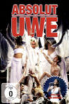 | Absolut Uwe
Year: 2010 Language: DE Format: mp4 Resolution: 480p |
| 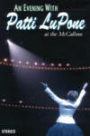 | An Evening with Patti LuPone
Year: 1997 Language: EN Format: mp4 Resolution: 720p |
| An Evening With Ria Jones
Year: 2020 Language: EN Format: mp4 Resolution: 1080p |
| 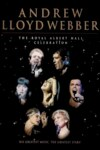 | Andrew Lloyd Webber - The Royal Albert Hall Celebration
Year: 1998 Language: EN Format: mp4 Resolution: 576p |

| Andrew Lloyd Webber at the BBC
Year: 2023 Language: EN Format: mp4 Resolution: 1080p |
| Andrew Lloyd Webber At The Tony Awards
Year: 2022 Language: EN Format: mp4 Resolution: 720p |

| Andrew Lloyd Webber The Premiere Collection Encore
Year: N/A Language: EN Format: mp4 Resolution: 576p |
| 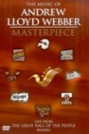 | Andrew Lloyd Webber: Masterpiece
Year: 2001 Language: EN Format: mp4 Resolution: 576p |

| Andrew Lloyd Webber: Symphonic Suites
Year: 2021 Language: EN Format: mp4 Resolution: 720p |
| 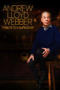 | Andrew Lloyd Webber: Tribute to a Superstar
Year: 2018 Language: EN Format: mp4 Resolution: 720p |

| Barbara Cook: Mostly Sondheim
Year: 2003 Language: EN Format: mp4 Resolution: 480p |
| BBC Proms: Sondheim's 80th Birthday
Year: 2010 Language: EN Format: mp4 Resolution: 720p |

| Bernadette Peters in Concert
Year: 1998 Language: EN Format: mp4 Resolution: 480p |
| 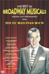 | The Best of Broadway Musicals
Year: 2005 Language: EN Format: mp4 Resolution: 480p |

| Broadway Backwards 2021
Year: 2021 Language: EN Format: mp4 Resolution: 720p |

| Broadway's Lost Treasures
Year: 2003 Language: EN Format: mp4 Resolution: 480p |
| 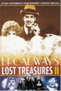 | Broadway's Lost Treasures II
Year: 2004 Language: EN Format: mp4 Resolution: 480p |
| 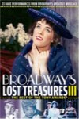 | Broadway's Lost Treasures III
Year: 2003 Language: EN Format: mp4 Resolution: 480p |
| 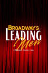 | Broadway’s Leading Men: A Musical Celebration
Year: 2024 Language: EN Format: mp4 Resolution: 720p |
| A Celebration of the Music from Coco
Year: 2020 Language: EN Format: mp4 Resolution: 1080p |
| 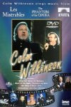 | Colm Wilkinson In Concert (1997)
Year: 1997 Language: EN Format: mp4 Resolution: 576p |
| 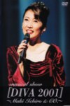 | Diva 2001
Year: 2001 Language: JA Format: mp4 Resolution: 480p |
| 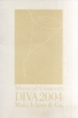 | Diva 2004
Year: 2004 Language: JA Format: mp4 Resolution: 480p |
| Elaine Paige at the BBC
Year: 2022 Language: EN Format: mp4 Resolution: 720p |

| Elaine Paige Celebrating 40 Years On Stage (2009)
Year: 2009 Language: EN Format: mp4 Resolution: 480p |
| Elaine Stritch: At Liberty
Year: 2002 Language: EN Format: mp4 Resolution: 576p |
| Gala jubileuszowa Teatru Roma
Year: 2003 Language: PL Format: mp4 Resolution: 480p |
| 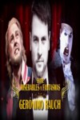 | Gerónimo Rauch 'Entre miserables y fantasmas'
Year: 2014 Language: ES, EN Format: mp4 Resolution: 1080p |
| Gran Gala de Stage Entertainment: 15 Aniversario
Year: 2014 Language: ES Format: mp4 Resolution: 480p |
| 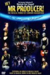 | Hey, Mr Producer!
Year: 1998 Language: EN Format: mp4 Resolution: 576p |
| 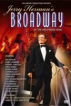 | Jerry Herman's Broadway
Year: 1994 Language: EN Format: mp4 Resolution: SD |
| 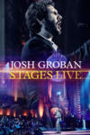 | Josh Groban: Stages Live
Year: 2015 Language: EN Format: mp4 Resolution: 1080p |
| Keeping Company with Sondheim
Year: 2022 Language: EN Format: mp4 Resolution: 1080p |
| 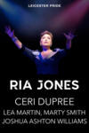 | Leicester Pride Ball 2019 - 2023
Year: 2023 Language: EN Format: mp4 Resolution: 1080p |
| 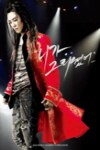 | Levay With Friends
Year: 2010 Language: DE, KO Format: mp4 Resolution: 480p |
| 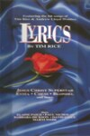 | Lyrics by Tim Rice
Year: N/A Language: EN Format: mp4 Resolution: 576p |
| 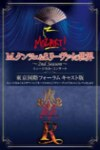 | M.クンツェ＆S.リーヴァイの世界
Year: 2012 Language: DE, JA Format: mp4 Resolution: SD |
| 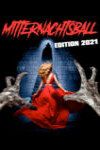 | Mitternachtsball
Year: 2021 Language: DE Format: mp4 Resolution: 1080p |
| Musical Highlights from The Royal Variety Show
Year: 2014 Language: EN Format: mp4 Resolution: 576p |
| Musicals In Ahoy 2002
Year: 2002 Language: EN Format: mp4 Resolution: SD |
| 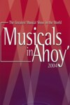 | Musicals In Ahoy 2004
Year: 2004 Language: EN Format: mp4 Resolution: SD |
| 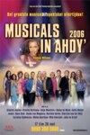 | Musicals In Ahoy 2006
Year: 2006 Language: EN Format: mp4 Resolution: SD |
| Musicalstars Singen Levay
Year: 2025 Language: DE Format: mp4 Resolution: 720p |
| 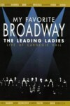 | My Favorite Broadway: The Leading Ladies
Year: 1999 Language: EN Format: mp4 Resolution: 480p |
| 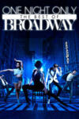 | One Night Only: The Best of Broadway
Year: 2020 Language: EN Format: mp4 Resolution: 1080p |

| Paloma San Basilio En Vivo
Year: 1985 Language: EN Format: mp4 Resolution: 576p |
| 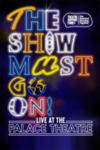 | The Show Must Go On! - Live at the Palace Theatre
Year: 2021 Language: EN Format: mp4 Resolution: 1080p |
| 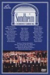 | Sondheim: A Celebration at Carnegie Hall
Year: 1992 Language: EN Format: mp4 Resolution: 480p |
| 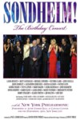 | Sondheim! The Birthday Concert
Year: 2010 Language: EN Format: mp4 Resolution: 480p |
| Stars and the Moon: Betty Buckley Live at the Donmar
Year: 2001 Language: EN Format: mp4 Resolution: 576p |
| Stephen Sondheim's 75th: The Concert
Year: 2005 Language: EN Format: mp4 Resolution: 480p |
| 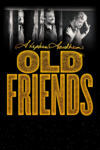 | Stephen Sondheim's Old Friends
Year: 2022 Language: EN Format: mp4 Resolution: 1080p |
| 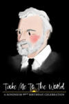 | Take Me to the World: A Sondheim 90th Birthday Celebration
Year: 2020 Language: EN Format: mp4 Resolution: 1080p |
| 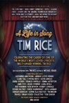 | Tim Rice: A Life In Song
Year: 2014 Language: EN Format: mp4 Resolution: SD |
| Wales in The West End
Year: 1997 Language: EN Format: mp4 Resolution: 576p |

| We Are Musical: Musical Highlights From VIenna
Year: 2021 Language: DE Format: mp4 Resolution: 720p |
| 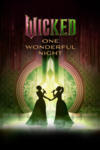 | Wicked: One Wonderful Night
Year: 2025 Language: EN Format: mp4 Resolution: 1080p |
| Wir spielen für Österreich (2020)
Year: 2020 Language: DE Format: mp4 Resolution: 720p |